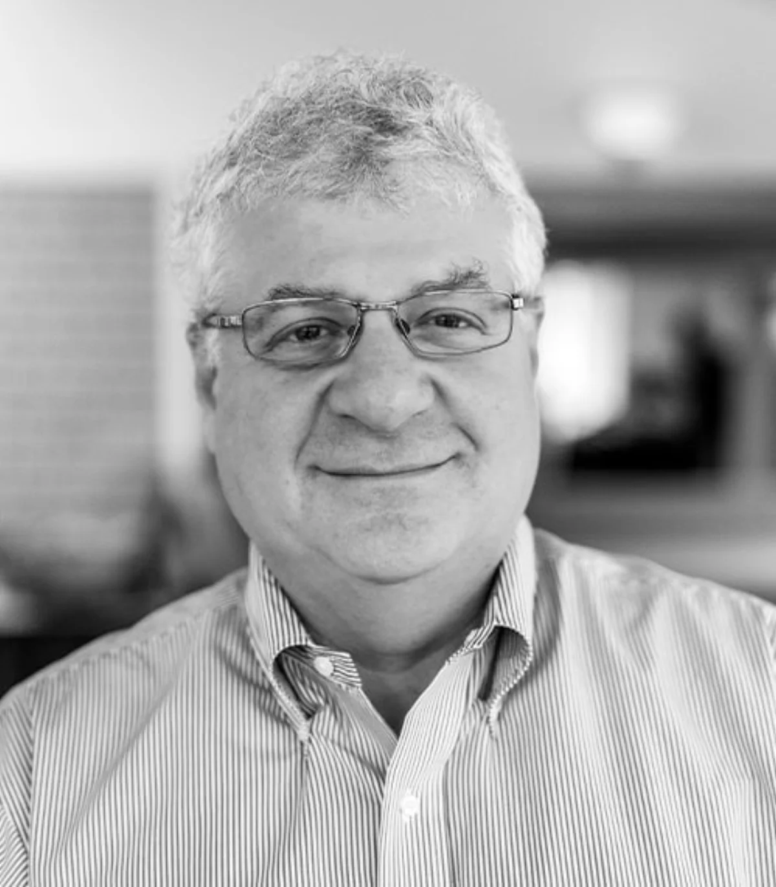
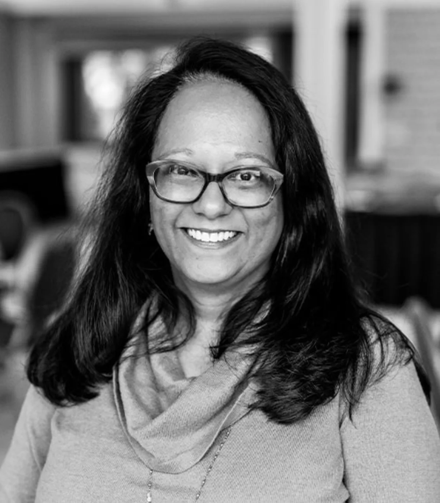

Portrait series · 2024–2026
Consistent enough for a system. Human enough to remember.
I photographed leadership, board members, and staff for EastRise and Blue Cross Vermont, building portrait libraries that could work across websites, LinkedIn, press materials, and internal communications.
Selected portraits




The system behind the portraits
The work included a repeatable lighting and framing approach, careful editing, and enough variation for each person to look like themselves rather than a template.